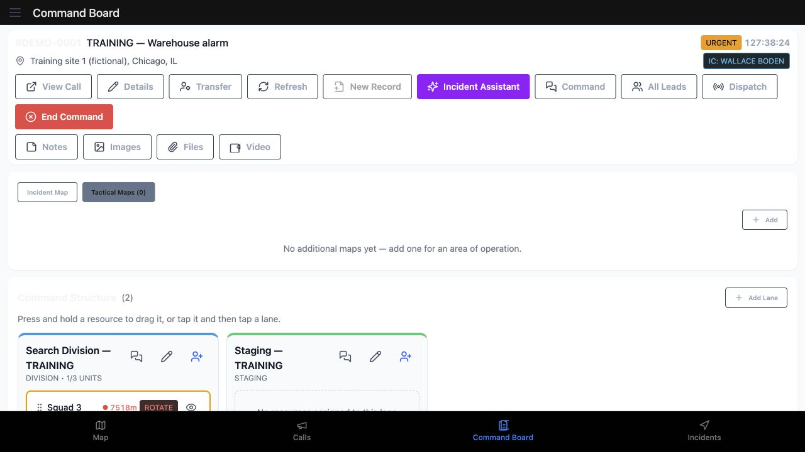
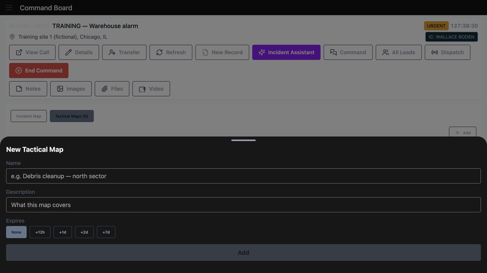
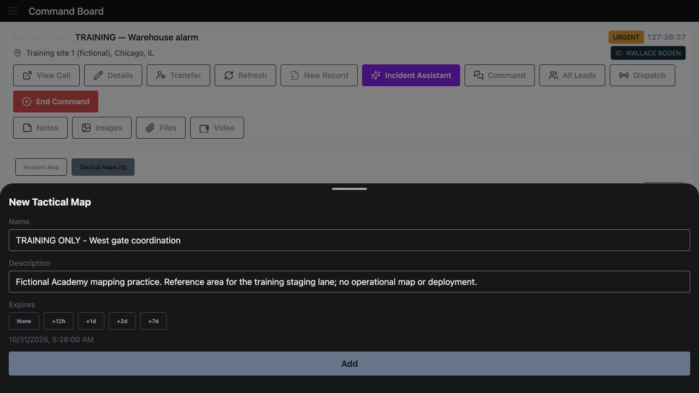
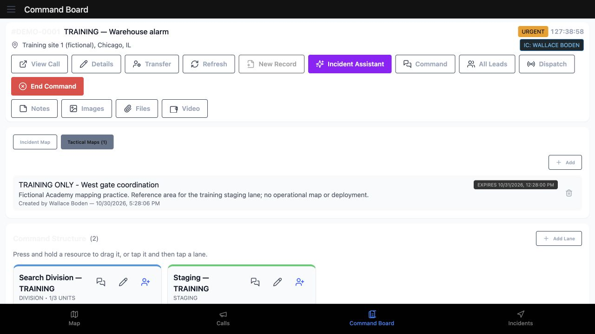
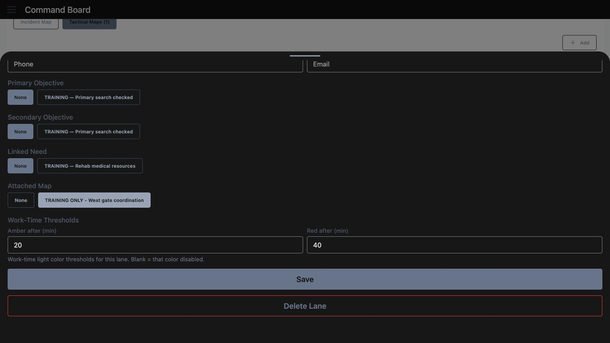
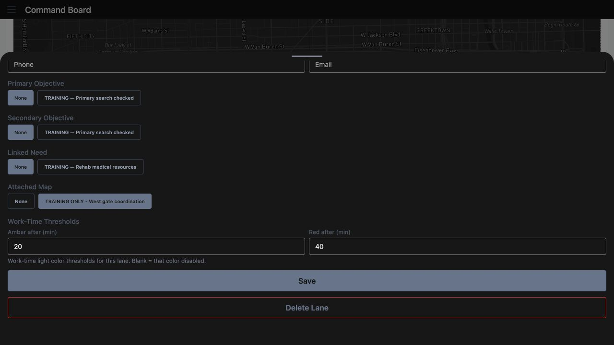
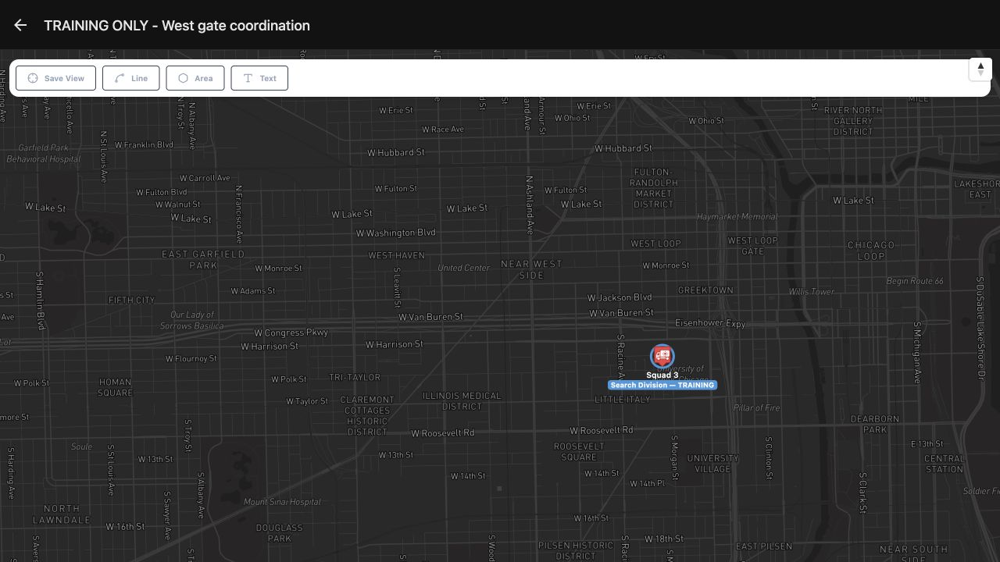

IC · Video walkthrough
IC: create a named tactical map and attach it to a lane
Create a clearly described incident reference map, inspect its saved expiry, attach it to Staging and verify the saved association after a fresh page load.
Before you begin
- An authorized IC session and an existing training incident command board.
- Permission to create incident maps and update the intended command lane.
- A fictional practice environment and a clear reference-area purpose.
Chapters
Watch the walkthrough
Step 1
Start with the incident’s tactical maps
On this IC Command Board, the training warehouse call is already open. Select Tactical Maps to review additional maps for this incident. The count is zero, and the empty state explains that a map can represent an area of operation. Choose Add in this section to begin a named reference map.

Practice
Find Tactical Maps on the intended incident board and use its Add control.
Step 2
Read the new map form
New Tactical Map provides Name, Description and Expires. Before a name is entered, Add is unavailable. Read the expiry choices: None, twelve hours, one day, two days or seven days. Decide what the map should identify and how long that reference should remain relevant to your department’s work.

Practice
Inspect the form and its expiry choices before entering a name.
Step 3
Prepare a clear name and purpose
Enter a name that another operator can recognize. Here it is Training Only, West gate coordination. The Description explains that this is a fictional reference area for the training staging lane. The twelve-hour choice has been selected, and the form displays a calculated expiry. Review the entered description and displayed time before choosing Add.

Practice
Prepare an identifiable fictional map name and description; review the displayed expiry before Add.
Step 4
Inspect the saved map card
The board now shows Tactical Maps with a count of one. The card contains the saved name, description and an Expires label. Compare that readback with the prepared form: this recording shows different clock times in those two views. Verify the intended expiry in your department before relying on it. The named card gives the next operator a clear purpose to check when opening this reference.

Practice
Read the saved map card and compare its expiry with the prepared form; investigate any clock difference.
Step 5
Attach the map to the intended lane
Use the pencil button on the Staging lane to open its settings, then scroll to Attached Map. None and the named West gate coordination map are available. Select the intended map and check the selected state before saving. This associates that reference with the lane you are editing. Keep the lane identity and the map’s name clear when several areas are being coordinated.

Practice
Open the intended lane’s pencil control and select the named map under Attached Map.
Step 6
Save and reopen the association
Choose Save in the lane settings. After a fresh page load, reopen the same Staging lane and return to Attached Map. The named map remains selected here. This readback confirms the saved association. Check the selected map whenever a lane’s purpose or working area changes, so the next operator can find the intended reference.

Practice
Save, reload, reopen the same lane and verify its Attached Map selection.
Step 7
Find the saved reference again
Return to Tactical Maps on the board. The count of one, the saved name, Description and Expires label are still present after the fresh navigation. Read the card before opening it. A short, specific description helps distinguish a staging reference from another team’s search area, patrol sector or industrial exercise location.
Practice
Revisit Tactical Maps and verify the saved reference card before opening it.
Step 8
Confirm the named map you opened
Open the card and check the map’s header. It shows the same West gate coordination name, with the training street map and Squad Three’s Search Division label below. Use that identity check when sharing references with another operator. Named areas can support community paramedicine or mental health coordination, search and rescue, security companies, wildland contractors, industrial response teams, and fire or EMS departments. Choose names and descriptions that explain your own team’s work.

Practice
Open the saved card and confirm its matching header and actual resource context.
Examples for your department
- Fire / EMS
- Create an identifiable training staging map and check its association before command handover.
- Community response
- Name an outreach staging reference for community paramedicine or mental health coordination and verify the intended lane association.
- Search and rescue
- Distinguish a search-area reference from a team’s staging map using specific names and descriptions.
- Security
- Keep event patrol and access-control references distinguishable for supervisors and company dispatchers.
- Wildland
- Label a contractor’s training staging or work-area reference so another crew lead can identify its purpose.
- Industrial
- Associate an industrial exercise reference area with the intended command lane and verify the saved setting.
Transcript
Download transcriptRead the complete transcript
IC: create a named tactical map and attach it to a lane Audience: Incident commanders, Division and staging leads, Department trainers Start with the incident’s tactical maps On this IC Command Board, the training warehouse call is already open. Select Tactical Maps to review additional maps for this incident. The count is zero, and the empty state explains that a map can represent an area of operation. Choose Add in this section to begin a named reference map. Practice: Find Tactical Maps on the intended incident board and use its Add control. Read the new map form New Tactical Map provides Name, Description and Expires. Before a name is entered, Add is unavailable. Read the expiry choices: None, twelve hours, one day, two days or seven days. Decide what the map should identify and how long that reference should remain relevant to your department’s work. Practice: Inspect the form and its expiry choices before entering a name. Prepare a clear name and purpose Enter a name that another operator can recognize. Here it is Training Only, West gate coordination. The Description explains that this is a fictional reference area for the training staging lane. The twelve-hour choice has been selected, and the form displays a calculated expiry. Review the entered description and displayed time before choosing Add. Practice: Prepare an identifiable fictional map name and description; review the displayed expiry before Add. Inspect the saved map card The board now shows Tactical Maps with a count of one. The card contains the saved name, description and an Expires label. Compare that readback with the prepared form: this recording shows different clock times in those two views. Verify the intended expiry in your department before relying on it. The named card gives the next operator a clear purpose to check when opening this reference. Practice: Read the saved map card and compare its expiry with the prepared form; investigate any clock difference. Attach the map to the intended lane Use the pencil button on the Staging lane to open its settings, then scroll to Attached Map. None and the named West gate coordination map are available. Select the intended map and check the selected state before saving. This associates that reference with the lane you are editing. Keep the lane identity and the map’s name clear when several areas are being coordinated. Practice: Open the intended lane’s pencil control and select the named map under Attached Map. Save and reopen the association Choose Save in the lane settings. After a fresh page load, reopen the same Staging lane and return to Attached Map. The named map remains selected here. This readback confirms the saved association. Check the selected map whenever a lane’s purpose or working area changes, so the next operator can find the intended reference. Practice: Save, reload, reopen the same lane and verify its Attached Map selection. Find the saved reference again Return to Tactical Maps on the board. The count of one, the saved name, Description and Expires label are still present after the fresh navigation. Read the card before opening it. A short, specific description helps distinguish a staging reference from another team’s search area, patrol sector or industrial exercise location. Practice: Revisit Tactical Maps and verify the saved reference card before opening it. Confirm the named map you opened Open the card and check the map’s header. It shows the same West gate coordination name, with the training street map and Squad Three’s Search Division label below. Use that identity check when sharing references with another operator. Named areas can support community paramedicine or mental health coordination, search and rescue, security companies, wildland contractors, industrial response teams, and fire or EMS departments. Choose names and descriptions that explain your own team’s work. Practice: Open the saved card and confirm its matching header and actual resource context. Examples for your department Fire / EMS: Create an identifiable training staging map and check its association before command handover. Community response: Name an outreach staging reference for community paramedicine or mental health coordination and verify the intended lane association. Search and rescue: Distinguish a search-area reference from a team’s staging map using specific names and descriptions. Security: Keep event patrol and access-control references distinguishable for supervisors and company dispatchers. Wildland: Label a contractor’s training staging or work-area reference so another crew lead can identify its purpose. Industrial: Associate an industrial exercise reference area with the intended command lane and verify the saved setting.